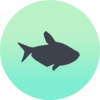

Rainbowfish
A GUIDE TO CARING & BREEDING RAINBOWS
Rainbows are becoming more popular and widespread in the aquarium hobby because of their unique coloration, low maintenance and easy breeding. Rainbowfish originated in the warmer climates of northern Australia and Papua New Guinea. Each species is unique and can even have micro variations within the species depending on which stream or lake they are caught.
They are an excellent community fish and most species school with their own species and even other Rainbowfish. Rainbowfish coexist with their own species and other community species such as Tetras and Discus. If breeding Rainbowfish it is important to be aware that they can and will crossbreed with other species. The resulting young are often discolored and stunted. If breeding Rainbows is on the agenda it is important to house them in a species specific aquarium.
Rainbowfish are a popular choice in the aquarium hobby due to their range of sizes. Some Rainbows will stay very small, such as Threadfin Rainbowfish. The Threadfin Rainbowfish grows to a maximum of 1" and has beautiful long fins and mirrored scales. Most dwarf Rainbow varieties will grow to a maximum of 1.5" (4-5cm) and look great as a large school in a big aquarium. They are an excellent substitute for some of the more common Tetra varieties like the Neon Tetra or the Cardinal Tetra.
Other Rainbows will grow to be very large in size, around 5-6" (10-15cm) in length. The Salmon Red Rainbowfish is a prime example of this. Males can reach 6" in length and adult varieties have a brilliant red shine. Larger Rainbowfish also have a lengthy lifespan of up to 10 years.

Temperature ~82°F
- The optimum aquarium temperature for Rainbowfish is around 80°F - 86°F (22°C-28°C). These higher temperatures make Rainbows and excellent tank mate for Discus.

pH ~6.8 | Hardness 8.0
- pH should be slightly acidic from 6-7. This can be achieved through the use of pH ready plant substrates and driftwood.

Max Size ~6"
- While most dwarf Rainbowfish will reach no more than 1.5", larger species can grow up to 6".

Nitrite 0ppm
- Nitrite should always be 0.

Ammonia 0ppm
- Ammonia should always be 0. Overstocking and higher temperatures could result in a spike.

Nitrate >40ppm
- Nitrates should always be as close to 0ppm as possible. Aquarium plants and extra water changes will help keep this under control.

Choosing Species
- Choose brightly colored, lively individuals that show good coloration. Females are often slightly smaller than the males and will be more dull in color. If breeding is a consideration be sure to purchase twice as many females in comparison to males.

Feeding
- Rainbowfish can be fed solely on commercial flake food but for variety it is recommended to feed them both finely ground fresh vegetables and frozen shrimp or worms once in a while. Rainbowfish are omnivorous and should be fed mainly vegetable based pellet or flake foods. If it is possible to source, they will readily consume mosquito larvae. This is a considerable part of their natural diet.

Breeding
- By using a spawning mop (dangling green cotton thread attached to a cork) Rainbowfish are fairly easy to breed in captivity. The majority of Rainbowfish will court early in the morning and spawn at first light if conidions are perfect.
- Feed your Rainbowfish a varied diet twice a day leading up to spawning. Ensure to keep water conditions stable and perfect. Water changes should be carried out twice a week to encourage spawning behavior.
- Check the mop each day for small opaque spheres. They will be dotted all over the wool threads. Remove the mop (keeping it in water the entire time) into a small bare bottomed aquarium with the same water conditions. Rainbow fish will hatch in the evening and be drawn to the light of a torch or flashlight. Feed the young infusoria and eventually baby brine shrimp.